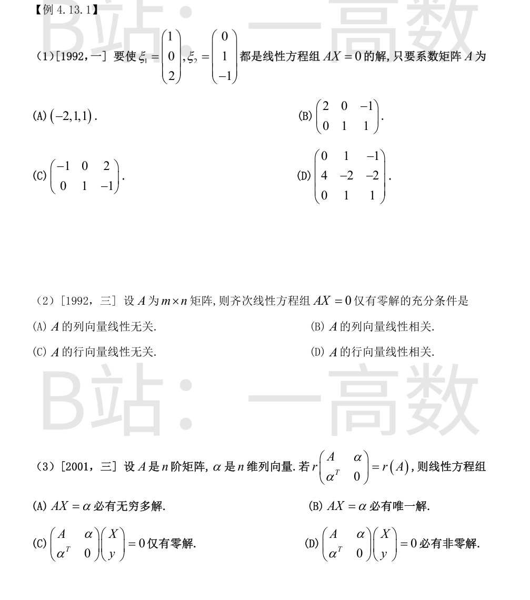
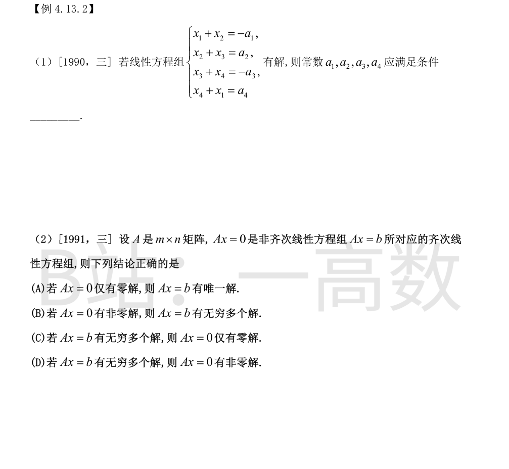
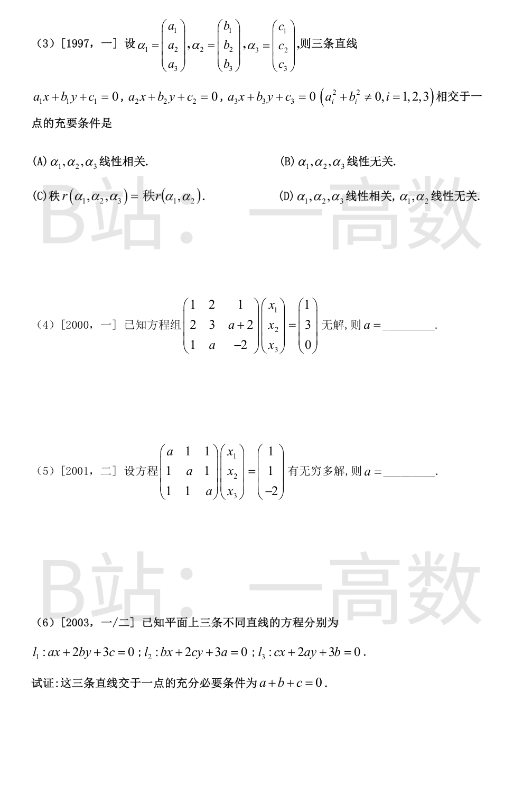

逐一验证 $A\xi_1=0$ 与 $A\xi_2=0$：
(A) 每行即 $(-2,1,1)$：$-2\cdot1+1\cdot0+1\cdot2=0$，$-2\cdot0+1\cdot1+1\cdot(-1)=0$，两解均满足；
(B) 第 1 行 $(2,0,-1)$：$2\cdot0+0\cdot1+(-1)\cdot(-1)=1\neq0$，不满足；
(C) 第 1 行 $(-1,0,2)$：$-1\cdot1+0+2\cdot2=3\neq0$，不满足；
(D) 第 1 行 $(0,1,-1)$：$0+0-2=-2\neq0$，不满足。
故选 (A)。
$AX=0$ 仅有零解 $\iff r(A)=n\iff A$ 的 $n$ 个列向量线性无关，故 (A)（且为充要条件）。
(C) 不充分：行向量无关只给出 $r(A)=m$，当 $m<n$ 时 $AX=0$ 仍有非零解；
(B)(D) 显然不充分（相关时必存在非零解或视情形，均不能保证只有零解）。
记 $B=\begin{pmatrix}A&\alpha\\ \alpha^{T}&0\end{pmatrix}$ 为 $n+1$ 阶矩阵。$r(B)=r(A)\le n<n+1$，故以 $B$ 为系数矩阵的 $n+1$ 元齐次方程组 $B\binom{X}{y}=0$ 的系数矩阵秩小于未知量个数，必有非零解：选 (D)，(C) 错误。
又 $r(A)\le r(A|\alpha)\le r(B)=r(A)$，故 $r(A|\alpha)=r(A)$，方程组 $AX=\alpha$ 必有解；但 $r(A)=n$ 时唯一、$r(A)<n$ 时无穷多解，两者都可能，故 (A)(B) 都不必然。


(eq 1)+(eq 3)：$x_1+x_2+x_3+x_4=-(a_1+a_3)$；(eq 2)+(eq 4)：$x_1+x_2+x_3+x_4=a_2+a_4$。
两式左端相同，故相容必须 $-(a_1+a_3)=a_2+a_4$，即
$$a_1+a_2+a_3+a_4=0$$
反之，若该条件成立，取 $x_4=t$ 为自由未知量：$x_3=-a_3-t$，$x_2=a_2+a_3+t$，$x_1=-a_1-a_2-a_3-t$，可验证四个方程全部满足（第 4 式：$x_4+x_1=-(a_1+a_2+a_3)=a_4$）。
故有解的充要条件为 $a_1+a_2+a_3+a_4=0$。
(D) 正确：$Ax=b$ 有无穷多解 $\Rightarrow r(A)=r(A|b)<n$ $\Rightarrow$ $Ax=0$ 的解空间维数 $n-r(A)>0$，有非零解。
(A) 错：$Ax=0$ 仅有零解即 $r(A)=n$，但 $Ax=b$ 可能无解（$r(A|b)=n+1$ 型）；
(B) 错：$Ax=0$ 有非零解即 $r(A)<n$，$Ax=b$ 仍可能无解；
(C) 错：$Ax=b$ 有无穷多解 $\Rightarrow r(A)<n$ $\Rightarrow Ax=0$ 必有非零解，不可能仅有零解。
三条直线交于同一点 $(x_0,y_0)$ $\iff$ 存在唯一的 $(x_0,y_0)$ 使三式同时成立，即
$$x_0\alpha_1+y_0\alpha_2+\alpha_3=0$$
亦即方程组 $x\alpha_1+y\alpha_2=-\alpha_3$ 有唯一解 $\iff r(\alpha_1,\alpha_2)=r(\alpha_1,\alpha_2,\alpha_3)=2$
$\iff\alpha_1,\alpha_2$ 线性无关且 $\alpha_3$ 可由 $\alpha_1,\alpha_2$ 线性表示 $\iff\alpha_1,\alpha_2,\alpha_3$ 线性相关而 $\alpha_1,\alpha_2$ 线性无关。选 (D)。
(A) 不充分：若 $\alpha_1,\alpha_2$ 也相关且方程组相容，则解不唯一（此时三线重合，有无穷多公共点）；
(B) 时方程组无解，三线无公共点；
(C) 不充分：容许 $r(\alpha_1,\alpha_2)=1$ 的情形（如三线重合，$r=1$），公共点不唯一。
$$|A|=\begin{vmatrix}1&2&1\\ 2&3&a+2\\ 1&a&-2\end{vmatrix}=(-6-a^{2}-2a)-2(-4-a-2)+(2a-3)=-(a-3)(a+1)$$
无解必有 $|A|=0$，即 $a=3$ 或 $a=-1$。
a=3：增广矩阵行变换 $r_2-2r_1=(0,-1,3|1)$，$r_3-r_1=(0,1,-3|-1)$，$r_3+r_2=(0,0,0|0)$，相容，有无穷多解，不合题意；
a=-1：$r_2-2r_1=(0,-1,-1|1)$，$r_3-r_1=(0,-3,-3|-1)$，$r_3-3r_2=(0,0,0|-4)$，出现 $0=-4$，无解。
故 $a=-1$。
$$|A|=\begin{vmatrix}a&1&1\\ 1&a&1\\ 1&1&a\end{vmatrix}=(a+2)(a-1)^{2}$$
有无穷多解 $\Rightarrow|A|=0\Rightarrow a=-2$ 或 $a=1$。
a=1：三个方程左端均为 $x_1+x_2+x_3$，右端为 $1,1,-2$，矛盾，无解；
a=-2：增广矩阵作行变换 $r_1+r_2+r_3$ 得全零行，$r_1-r_2$ 化为 $-x_1+x_2=0$，$r_2-r_3$ 化为 $-x_2+x_3=1$，故 $r(A)=r(\bar A)=2<3$，有解且有无穷多解（通解形如 $x_1=x_2$，$x_3=x_2+1$）。
故 $a=-2$。
记 $M=\begin{pmatrix}a&2b&3c\\ b&2c&3a\\ c&2a&3b\end{pmatrix}$，直接展开可得
$$|M|=a(6bc-6a^{2})-2b(3b^{2}-3ac)+3c(2ab-2c^{2})=-6(a^{3}+b^{3}+c^{3}-3abc)=-3(a+b+c)\big[(a-b)^{2}+(b-c)^{2}+(c-a)^{2}\big]$$
必要性：设三线交于 $(x_0,y_0)$，则 $M(x_0,y_0,1)^{T}=0$ 有非零解，故 $|M|=0$，即 $(a+b+c)[(a-b)^{2}+(b-c)^{2}+(c-a)^{2}]=0$。若 $(a-b)^{2}+(b-c)^{2}+(c-a)^{2}=0$，则 $a=b=c$，此时三条直线方程同为 $ax+2ay+3a=0$，三线重合，与「三条不同直线」矛盾。故 $a+b+c=0$。
充分性：设 $a+b+c=0$。三线联立方程组的系数矩阵（前两列）记为 $\tilde A$，增广矩阵为 $\bar A=[\tilde A\,|\,-3(c,a,b)^{T}]$，而 $M=[\tilde A\,|\,3(c,a,b)^{T}]$，故 $r(\bar A)=r(M)$。
若 $r(\tilde A)\le1$，则 $(a,2b),(b,2c),(c,2a)$ 两两成比例，可得 $ac=b^{2},\ ab=c^{2},\ a^{2}=bc$，推得 $a=b=c$，进而由 $a+b+c=0$ 得 $a=b=c=0$，与 $a^{2}+b^{2}\neq0$ 矛盾，故 $r(\tilde A)\ge2$；又 $|M|=0$（因 $a+b+c=0$）给出 $r(M)\le2$。
于是 $r(\tilde A)=r(\bar A)=2$（等于未知量个数 2），联立方程组有唯一解，即三条直线交于一点。证毕。